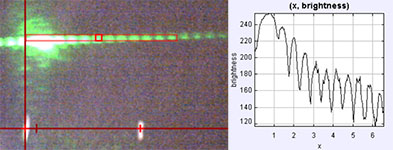

Beyond kinematics, Tracker can also measure the brightness along a line in a video image using a "line profile" tool. This allows us to create a more stable version of a thermal expansion experiment published in TPT in 2008. The experimental setup consists of a U-shaped aluminum sheet supporting a slit made of two razor blades. A laser projected through the slit produces a diffraction pattern on a screen. The base of the aluminum sits in a water bath and as the temperature of the bath changes the slit width, and thus the diffraction pattern, changes. An added bonus of this experiment is that students get a preview of diffraction, which they study in detail later in the semester.
